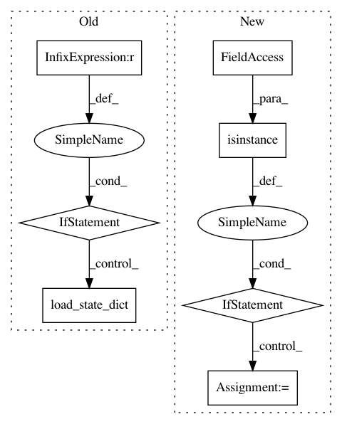

60dfcf812eca79017dced46e1189245c050a3fd6,utils/factory.py,UtilsFactory,unpack_checkpoint,#Any#Any#Any#Any#Any#,241
Before Change
else:
model.load_state_dict(checkpoint["model_state_dict"])
if criterion is not None:
for key in criterion:
criterion[key].load_state_dict(
checkpoint["criterion_" + str(key) + "_state_dict"])
if optimizer is not None:
for key in optimizer:
optimizer[key].load_state_dict(
checkpoint["optimizer_" + str(key) + "_state_dict"])
After Change
if dict2load is None:
continue
if isinstance(dict2load, dict):
for key, value in dict2load.items():
if value is not None:
name2load_ = f"{name2load}_{key}_state_dict"
value.load_state_dict(checkpoint[name2load_])
else:
name2load = f"{name2load}_state_dict"
dict2load.load_state_dict(checkpoint[name2load])
In pattern: SUPERPATTERN
Frequency: 3
Non-data size: 7
Instances
Project Name: Scitator/catalyst
Commit Name: 60dfcf812eca79017dced46e1189245c050a3fd6
Time: 2018-12-10
Author: scitator@gmail.com
File Name: utils/factory.py
Class Name: UtilsFactory
Method Name: unpack_checkpoint
Project Name: junyanz/pytorch-CycleGAN-and-pix2pix
Commit Name: 9ba91fa13cbb1e7bc4069e46469b34abb5ca4869
Time: 2018-05-22
Author: tongzhou.wang.1994@gmail.com
File Name: models/base_model.py
Class Name: BaseModel
Method Name: load_networks